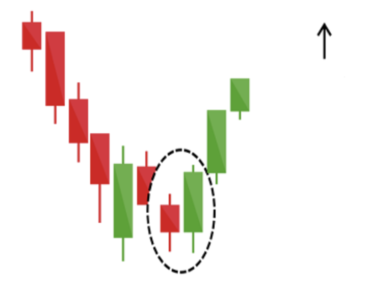
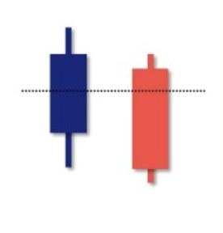
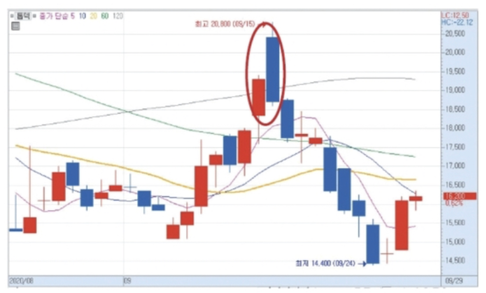
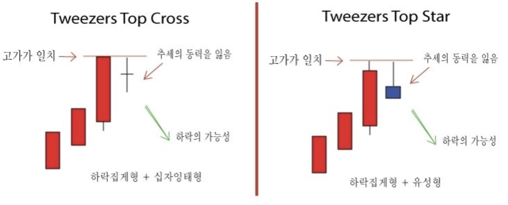
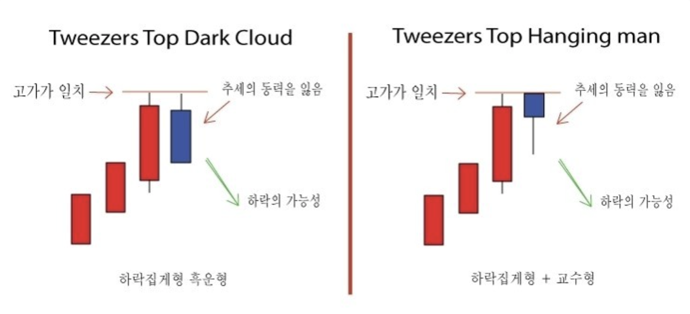
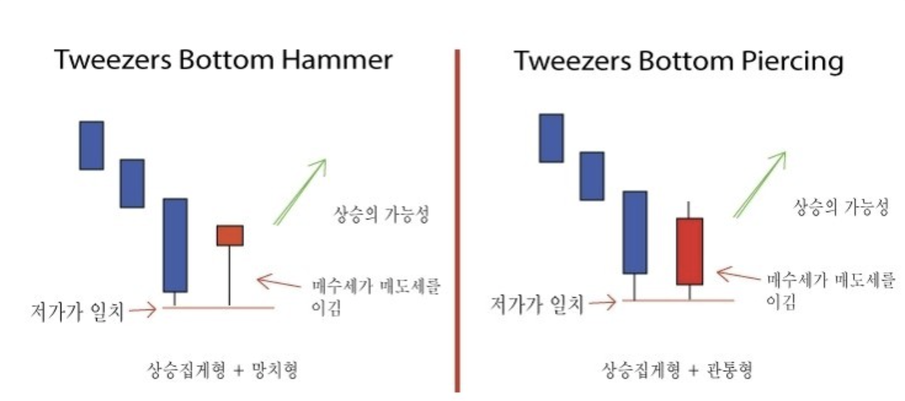

캔들
망치형 캔들
망치(Hammer)캔들
하락추세의 끝(저점)에 등장하며 상승 반전의 신호이다.
- 하락 추세의 저점에서 출현한다.
- 몸체는 짧고 꼬리는 길어야 한다.
- 하락의 마지막에 다달았을 때 나타나야 한다.
- 양봉 음봉 상관없지만 양봉이면 신뢰도가 더 높다.
- 아래꼬리가 긴 것은 크게 하락했으나 매수세가 끌어올린 것으로 판단 가능
- 바로 매수보다는 다음날 추세 보고 진입
- 이전 음봉 캔들의 시가 위로 망치형 캔들이 형성될 때 매수
- 망치형 캔들의 몸통 아랫부분을 이탈하면 매도 고려
교수형(Hanging Man) 캔들
상승추세의 끝(고점)에 등장하며 하락 반전의 신호이다.
- 상승 추세의 고점에서 출현한다.
- 큰 상승폭을 보인 이후에 출현
- 5~10일정보 상승 추세를 보인 이후 출현
- 천장권에서 발생해야 신뢰도가 높다.
- 몸체는 짧고 꼬리는 길어야 한다.
- 아래꼬리가 길 수록 윗꼬리가 짧을수록 몸통이 짧을수록 의미가 더 있다.
- 양봉 음봉 상관없지만 음봉이면 신뢰도가 더 높다.
- 바로 매도 보다는 다음날 하락 캔들이 만들어지면 매도 포지션, 다음날 시가가 교수형 몸통 아래에서 형성된다면 매도 포지션
- 세력이 물량을 털 때 자주 발생한다.
-
장 중에 매도 세력이 가격을 낮추려했으나 매수 세력이 매도세를 받아먹으며 가격을 올렸다.
그러나 매수세가 충분하지 못해 결국 종가는 시가보다 아래에서 마감되었다.
남은 매도물량을 팔기위한 속임수일 수 있다.
연속적인 상한가를 기록하면서 급등하는 종목은 반드시 세력이 유입되어 있으며 어느정도 급등하게 되면 물량을 털 고민을 한다.
상승흐름을 타던 주가는 당일에도 시초가가 아주 급등하여 출발 하게 된다.
이후 세력은 자전거래, 허수매매, 통정거래 등 갖은 수법을 동원하여 거래를 폭발적으로 증가시키며 주가의 변동성을 아주 크게 만든다.
이때 수많은 개인투자자들이 큰 변동성에 현혹되어 매수에 가담하게 되지만 주가는 급락세로 전환하고 추가상승에는 실패하게 되는 것이다.
여기서 세력은 1차적으로 대량물량을 처분하게 된다.
교수형은 몸통의 길이가 아래꼬리보다 길수록 신뢰도가 높으며, 거래량이 전날에 비해 급증할수록 신뢰도가 높아지게 된다.
장악형 캔들
상승 장악형(Bullish Engulfing) 캔들
첫번째 캔들이 하락하며 오늘 캔들이 그 전 하락 캔들을 완전히 감싸는 형태로 하락 흐름을 상승 흐름으로 반전하는 전환점이다.
- 하락 추세에서 등장한다.
- 꼬리보다는 몸통 위주로 파악
- 어제 캔들의 어떤 부분도 오늘 캔들의 범위를 반드시 넘으면 안된다.
- 어제 캔들의 몸통이 오늘 캔들의 몸통안에 있는지는 유효한 시그널이다.
- 어제 캔들은 음봉이고 오늘 캔들은 큰 양봉이어야 한다.
- 어제 캔들은 이평선 아래에 있으며 오늘 캔들은 이평선을 돌파하면 좋다.
- 어제 캐들의 꼬리가 길면 강한 하락세를 나타내므로 상승 패턴의 신뢰성을 약화시킨다.
- 오늘 캔들의 꼬리가 없을수록 좋다.(이는 매수자가 성공적으로 가격을 끌어올려 최고가를 유지했다는 강한 상승 압력이다.)
- 어제 거래량보다 2배 이상의 높은 거래량이 나와야 한다.
- 바닥권에서는 강한 상승 반전 신호로 해석된다.
- 어제 캔들의 몸통이 작고 오늘 캔들의 몸통이 클수록 강한 추세 전환
- 오늘 캔들의 저가가 지지선을 형선한다.
- 내일 캔들이 음봉이 나오더라도 오늘 캔들의 몸통 절반을 하락하지 않는다면 매도 보류

하락 캔들
https://mathstock.tistory.com/10
상승 예상 캔들
상승 장악형(Bullish Engulfing) 캔들
관통형(Piercing-Line) 캔들
전일 종가 밑에서 시가를 형성해 전일 음봉의 50% 이상을 당일 양봉으로 관통

하락 예상 캔들
하락 장악형(Bearish Engulfing) 캔들
먹구름형(Dark-Cloud-Cover) 캔들
먹구름형은 전일의 양봉 중간에서 마무리가 되는데 추세의 전환 신호로 강한편은 아니나 추세의 고가권에서 형성이 된다면 보수적으로 접근하라는 신호이다.
- 오늘 캔들이 긴 몸통을 가진 음봉이다.
- 어제 캔들이 긴 몸통의 양봉이다다.
- 오늘 캔들의 시가는 어제 캔들의 고가 위에 형성된다.
- 오늘 캔들의 종가는 이번 캔들의 저가 근처에 형성된다.(저가에 많이 근접할수록 하락 반전의 신뢰도는 높다.)
- 상승 추세의 정상권에서 이 패턴이 나타난다면 중요한 하락 반전 신호이다.
- 오늘 캔들의 종가가 어제 캔들의 몸통 50%이상을 하락하지 않는다면 매도를 보류해도 좋다.
- 오늘 캔들 다음날에도 음봉이 나온다면 매도 대응

위 꼬리가 길게 나온 경우에는
긍정적으로 본 투자자들이 밀물처럼 매수를 했다가 실망감이 생겨 매수세가 빠졌을 때 보이는 유형이다. 장중 실망감이 커졌다는 의미이다.
아래 꼬리가 길게 나온 경우에는
해당 종목이 안좋다고 생각해 매도를 한 투자자가 많다는 의미이다.
그럼에도 불구하고 양봉으로 끝났다면 일명 '망치형'으로 장중 매수세가 유입하여 양봉으로 마감했다는 의미로 반등을 예상하는 투자자가 많았다는 반증이 된다.
주가가 바닥을 기다가 긴 양봉이 나왔다면 바닥을 탈출할 수 있다는 신호로 받아들여진다.
그만큼 강한 매수세가 들어온 것이니 말이다.
다만 위로 꼬리가 달린 양봉이라면 고가에 매도하려는 세력이 있다는 뜻이니 주의가 필요하다.
특히 주가가 최근 큰 폭으로 올랐다면 반락의 신호로 받아들여지기도 한다.
주가가 천정권에 있다가 긴 음봉이 나왔으면 하락 전환의 신호이므로 매도하는 게 좋다.
한편 위로 꼬리가 달린 음봉의 경우 고가에 매도세력이 존재한다는 뜻인데, 바닥권에선 상승전환에 실패했다고 보면 되고 천정권에선 주가가 떨어지는 시그널로 보면 된다.
또 밑으로 꼬리가 달린 음봉이라면 저가에 강력한 매수세력이 존재한다는 의미로 바닥권이라면 매수를 검토해 보는 것도 좋다.
https://blog.naver.com/PostView.nhn?blogId=rearestate&logNo=220441724156
집게형(Tweezers) 캔들
고가나 저가가 같다는 것은 전날의 고가나 저가를 갱신하지 못하였다는 말이고 기존의 추세에서 변화가 생겼다는 말이다.
더우기 전날의 고가를 못 뚫고 정확히 같은 고가를 형성하였다는 말은 그 가격이 상당한 저항의 역할을 한다는 뜻으로 이 가격을 돌파하지 못하면 추세를 이어가기가 힘들다는 뚯이다.
집게형의 조건으로 하락집게형은 전날의 고가와 당일의 고가가 같아야 하고 둘째날의 몸통이 작아야 한다.
상승집게형은 전날의 저가와 당일의 저가가 같아야 하고 둘째날의 몸통이 작아야 한다.
집게형 천장형(Tweezers Top) 캔들
상승 추세에 있던 두 개 또는 그 이상의 캔들이 더 이상의 고점을 갱신하지 못하면서 이전 고가와 동일한 고가를 형성
일반적으로 고점이 저항선 역할을 함


집게형 (Tweezers Bottom) 캔들
주가 하락 막바지에 2개의 캔들의 저점이 같은 것
일반적으로 저점이 지지선 역할을 함.
